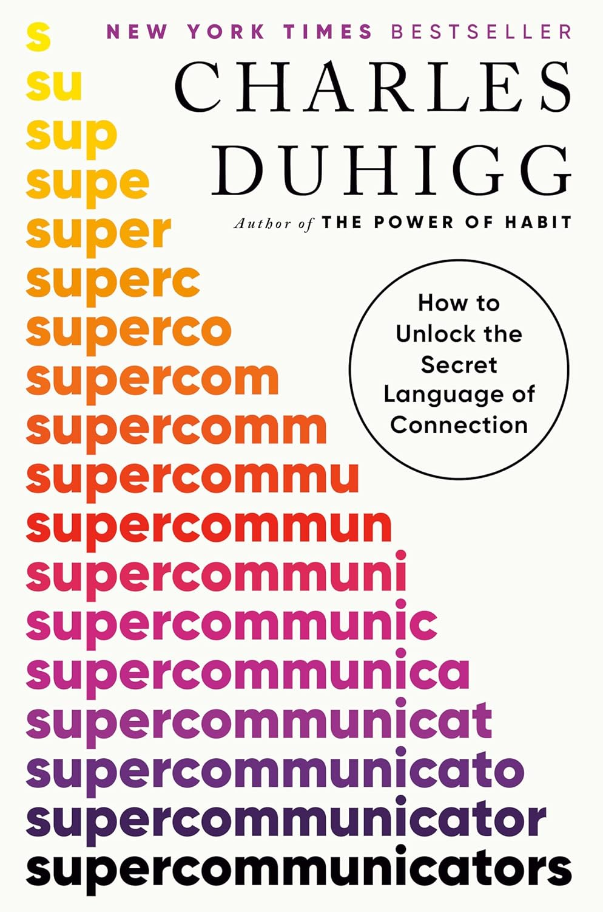

"Supercommunicators: How to Unlock the Secret Language of Connection"
- Read on 2025-04-07
- Rating: ️️️️️
- Format: 🎧 (7 hours 28 minutes)
I read too many personal development books, due in part to some obligations at work. Most of these books are somewhere between fine and good - rarely great. This one is great. Maybe it was the accompanying conversations around the book, but I think it was the content. From FBI negotiator insights, talking to the enemy about guns, and making hard conversations easier - this is a book I'd happily reread to discuss with somebody close to me.
- Prior: Ancillary Mercy
- Next: Romney